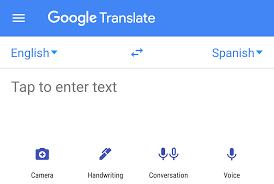
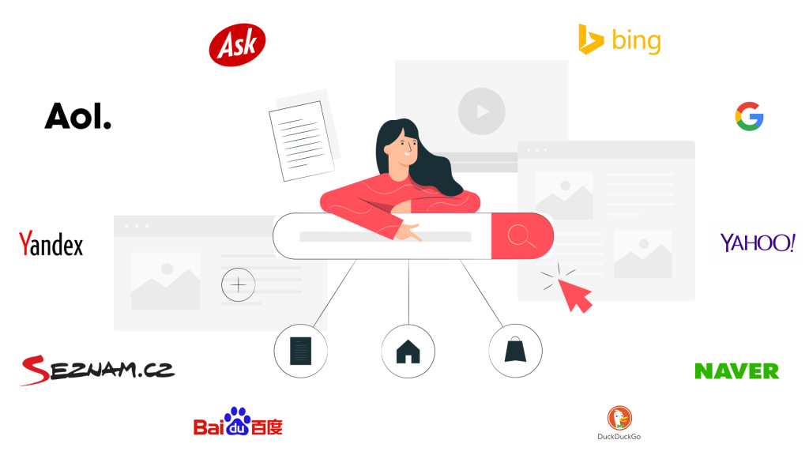

¿Dónde se aplica la IA?
La inteligencia artificial se utiliza en numerosos campos que afectan nuestra vida cotidiana. Algunos ejemplos destacados incluyen:
Asistentes virtuales: Siri, Google Assistant, Alexa.
Reconocimiento facial y de voz: Desbloqueo de teléfonos, seguridad.
Traducción automática: Google Translate.

Motores de búsqueda: Ofrecen resultados relevantes basados en tu historial.

Recomendaciones personalizadas: Plataformas de streaming, comercio electrónico.
Vehículos autónomos: Coches sin conductor.
Ciberseguridad: Detección de amenazas y fraudes.
Medicina: Diagnóstico de enfermedades, desarrollo de fármacos.
Robótica: Robots que realizan tareas en fábricas o entornos peligrosos.